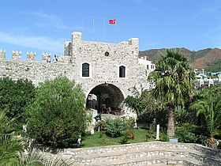
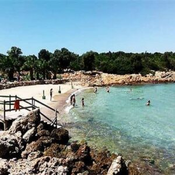
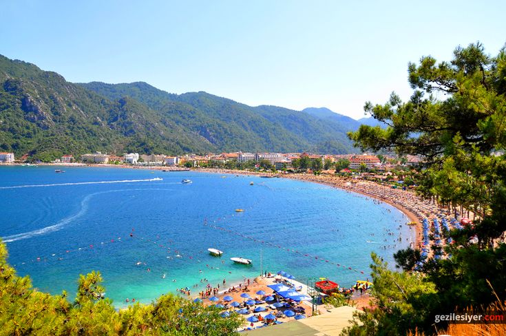

Bu gezi rehberi sitesi, Türkiye'nin en güzel 5 yerini tanıtmaktadır.
Marmaris Kalesi, şehrin tarihini yansıtan önemli bir yapıdır.
Sedir Adası, muhteşem doğası ve tarihi ile dikkat çeker.
İçmeler Plajı, berrak suyu ve güzel kumsalı ile ünlüdür.
